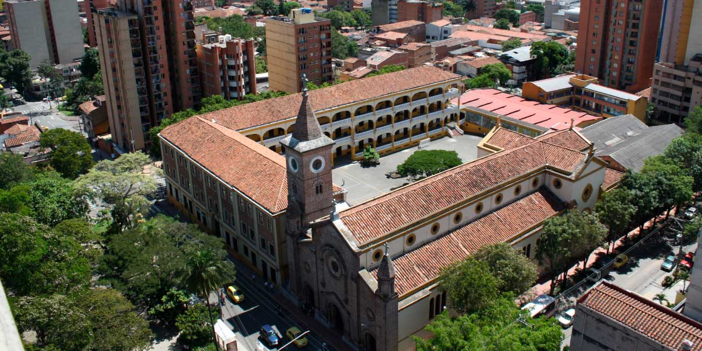

Reseña historica
Fue un 7 de febrero de 1938 de Don Bosco, iniciar la tarea de la educación, en un ambiente parroquial y familiar de este poblado sector de la ciudad, noble, decente y cristiano por esencia. Nuestro colegio abrió sus puertas con cerca de 113 estudiantes por lo pronto y para ese año los tres primeros grupos de instrucción primaria…todo faltaba y lo había todo: el espíritu de Don Bosco, poderoso, lleno de optimismo y alegría. 
Historia Personal
Entre a la institucion en el año 2009 para cursar el grado transicion y actualmente estoy en el grado 11º a punto de culminar una de las mejores etapas de mi vida.
A lo largo de todo esto me he sentido muy bien y feliz con todo el acompañiento de parte del colegio.